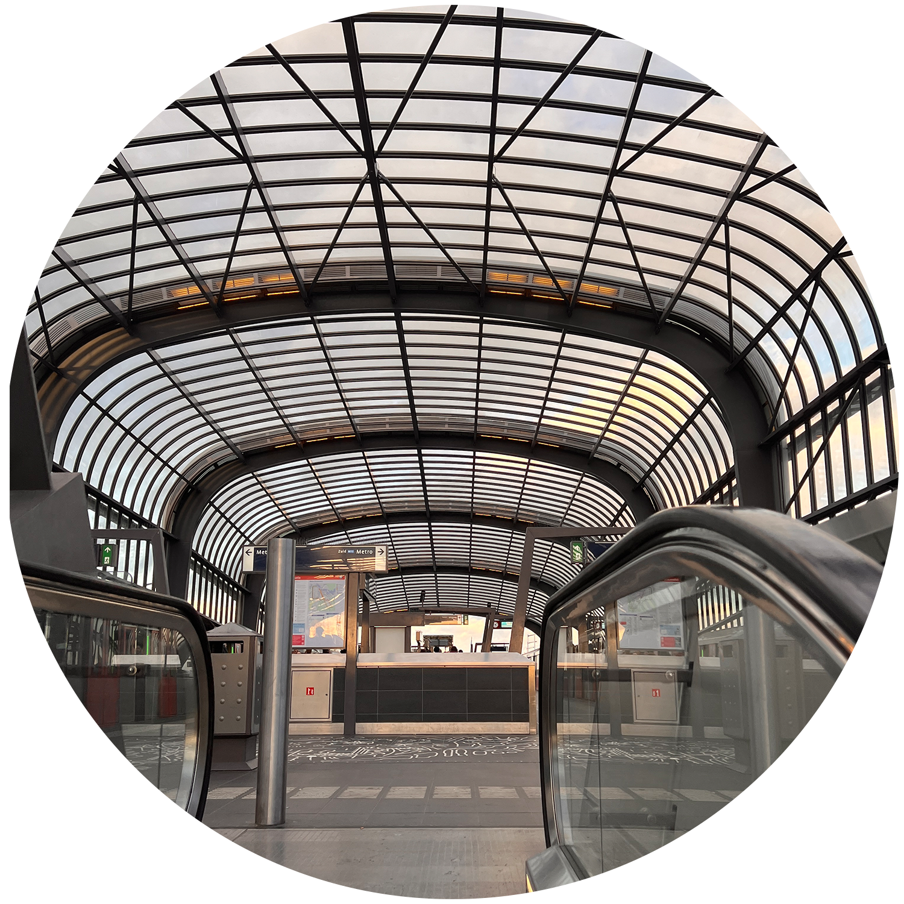
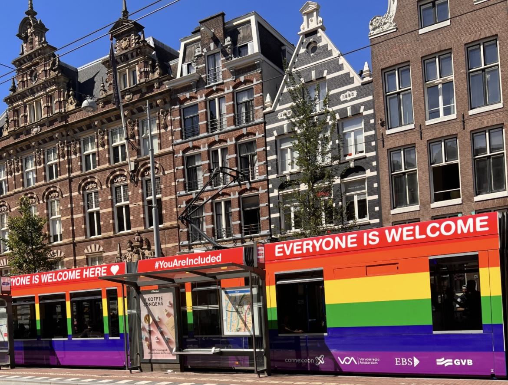
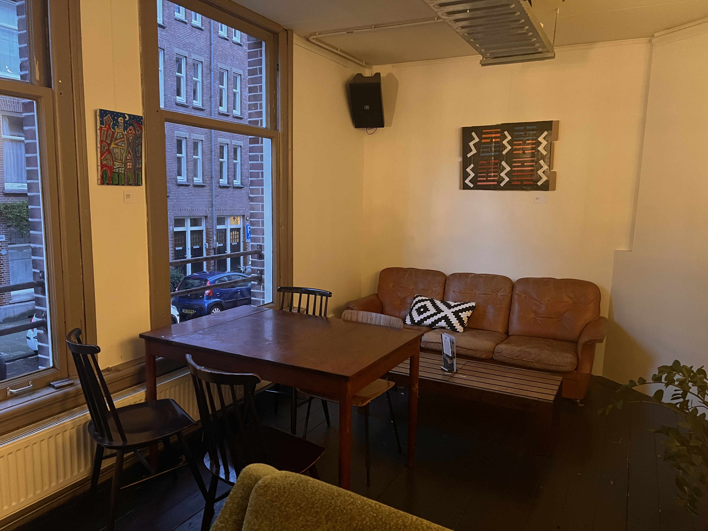
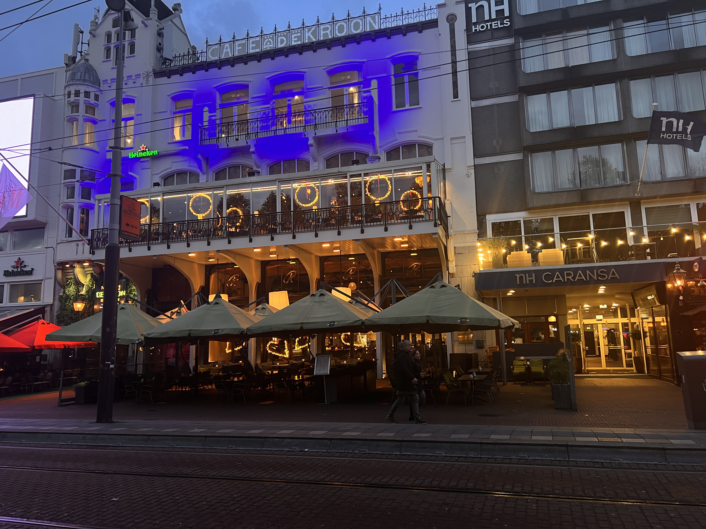
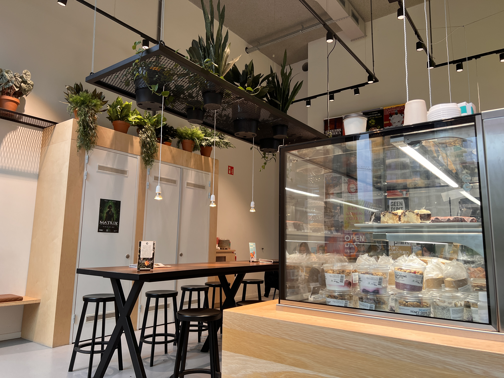
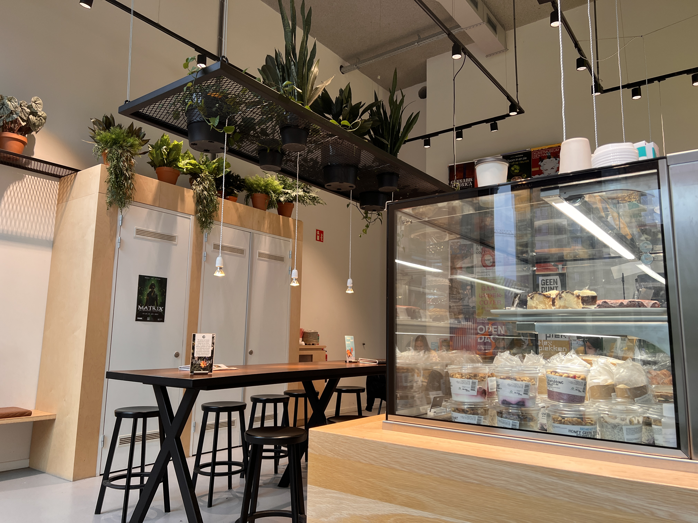
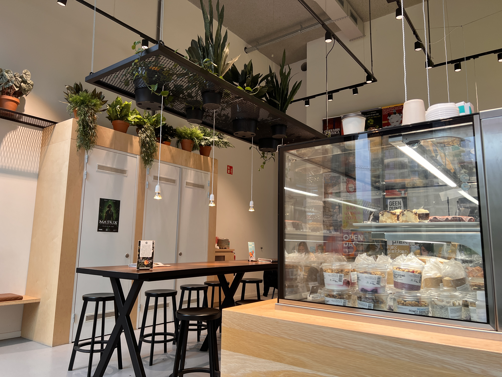

Amsterdam Vegan
Amsterdam vegan is en organisatie die vegetarische en vegan restaurants in Amsterdam uitprobeerd en rate.

In Amsterdam zijn er veel goede restaurants te vinden, maar mijn taak is om de beste vegetarische en vegan restaurants te vinden!
Veggie! Maar lekker..?
Amsterdam is een stad die barst van vegetarische en veganistische eetgelegenheden. Ik loop dagelijks door de steegjes van Amsterdam om de meest beroemde tot afgelegen restaurants te vinden en deze te beoordelen.



 

